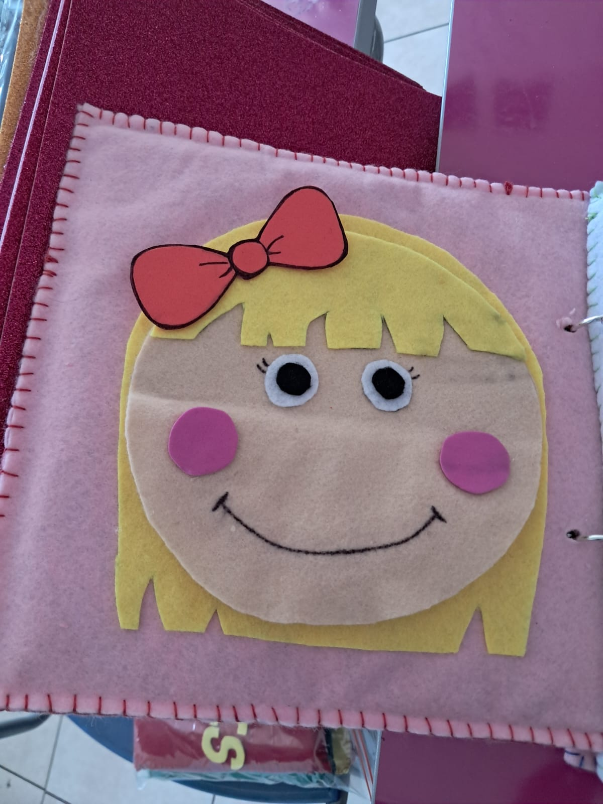
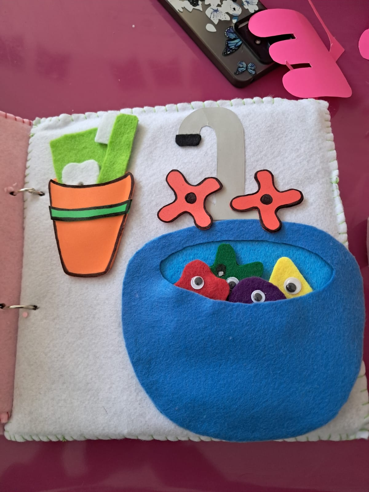
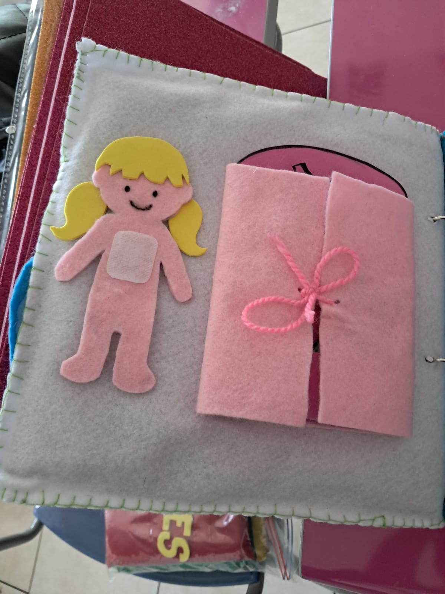
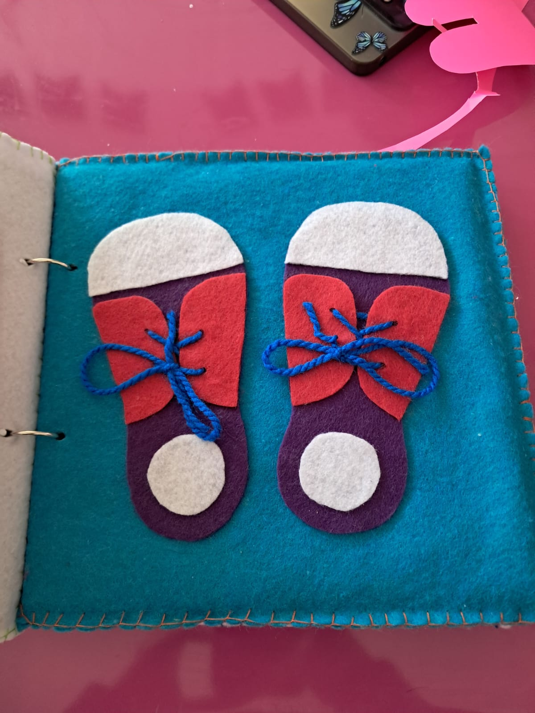
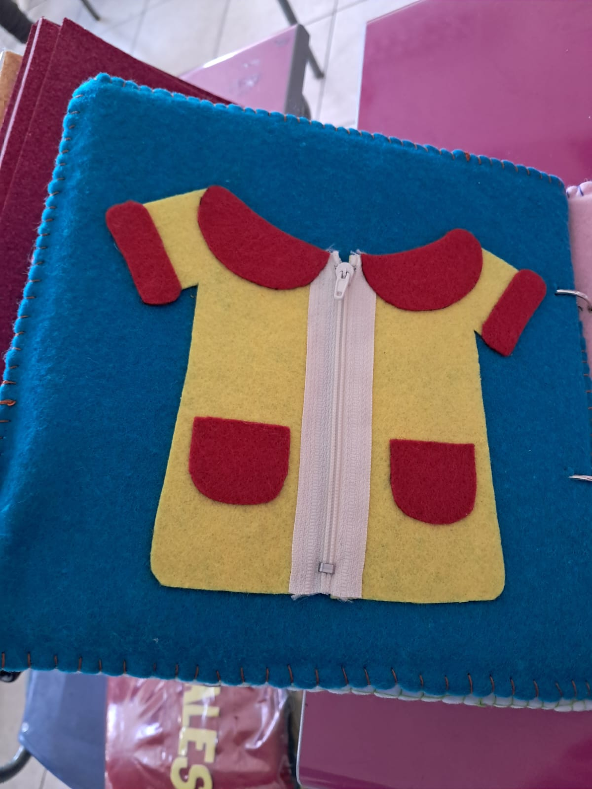
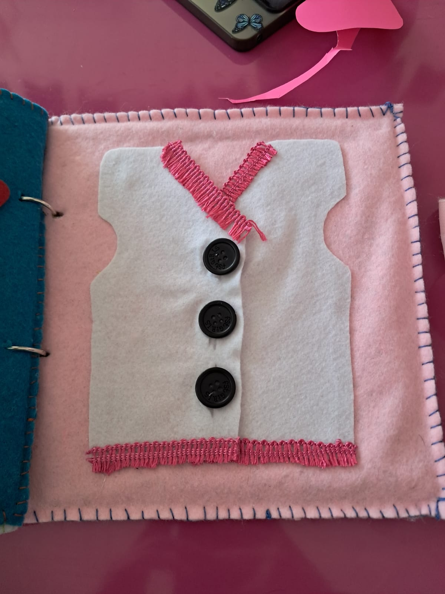

¿Qué es este libro?
Este libro sensorial invita a los niños a explorar con sus manos y sentidos mientras aprenden a hacer cosas por sí mismos. A través de texturas, colores y actividades simples, fomenta la independencia, la confianza y la alegría de descubrir lo que pueden lograr solos.
Materiales Usados
- Fieltro de colores
- Foamy o goma eva
- Tela con diferentes texturas
- Botones grandes
- Velcro (cierre mágico)
- Tijeras
- Silicona caliente o pegamento textil
- Aguja e hilo
- Anillos metálicos para encuadernar
üì∏ Galer√≠a del Libro






Interacción
Haz clic en el botón para ver un consejo extra: